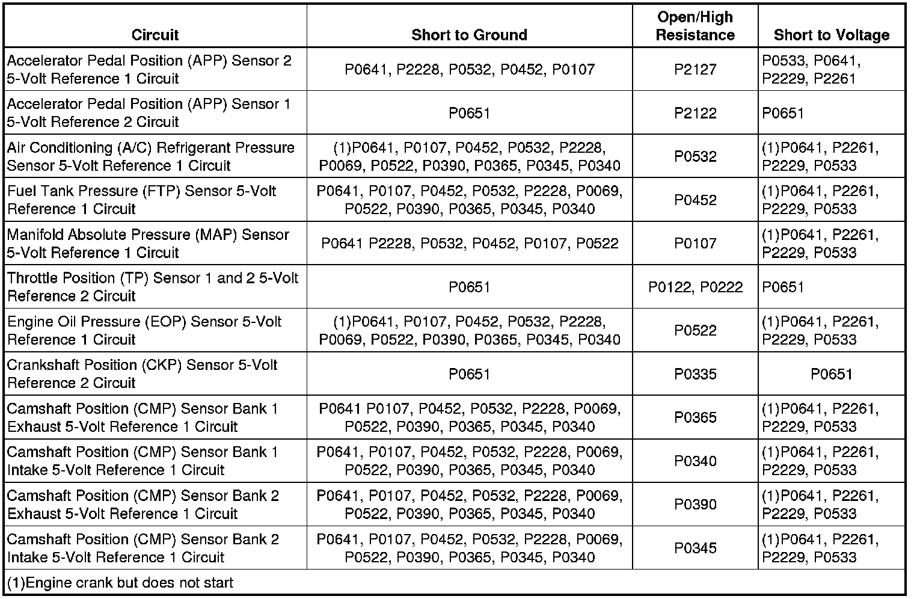

P0651
DTC P0641 or P0651
Diagnostic Instructions
* Perform the Diagnostic System Check - Vehicle (Initial Inspection and Diagnostic Overview) prior to using this diagnostic procedure.
* Review Strategy Based Diagnosis (Initial Inspection and Diagnostic Overview) for an overview of the diagnostic approach.
* Diagnostic Procedure Instructions (Initial Inspection and Diagnostic Overview)provides an overview of each diagnostic category.
DTC Descriptors
DTC P0641
- 5-Volt Reference 1 Circuit
DTC P0651
- 5-Volt Reference 2 Circuit
Diagnostic Fault Information

Circuit/System Description
The control module has 2 internal 5-volt reference busses called 5-volt reference 1 and 5-volt reference 2. Each reference bus provides 5-volt reference circuits for more than one sensor. Therefore, a fault condition on one 5-volt reference circuit will affect the other 5-volt reference circuits connected to that reference bus. The control module monitors the voltage on the 5-volt reference busses.
The 5-volt reference 1 bus provides 5 volts to the following sensors:
* The air conditioning (A/C) refrigerant pressure sensor
* The manifold absolute pressure (MAP) sensor
* The fuel tank pressure (FTP) sensor
* The accelerator pedal position (APP) sensor 2
* The camshaft position (CMP) sensors
* The Engine Oil Pressure (EOP) sensor
The 5-volt reference 2 bus provides 5 volts to the following sensors:
* The APP sensor 1
* The throttle position (TP) sensor 1 and 2
* The crankshaft position (CKP) sensor
Conditions for Running the DTC
* DTCs P0601, P0602, P0603, P0604, P0606, P0607, P060D, P062F, P1680 and P2610 are not set.
* The ignition is ON.
* The ignition voltage is more than 5.23 volts.
* DTCs P0641 and P0651 run continuously when the above conditions are met.
Conditions for Setting the DTC
The control module detects a voltage out of tolerance condition on the 5-volt reference 1 or 2 bus for more than 0.5 second.
Action Taken When the DTC Sets
DTCs P0641 and P0651 are Type A DTCs.
Conditions for Clearing the MIL/DTC
DTCs P0641 and P0651 are Type A DTCs.
Reference Information
Schematic Reference
Engine Controls Schematics (Electrical Diagrams)
Connector End View Reference
Component Connector End Views (Connector Views)
Electrical Information Reference
* Circuit Testing (Component Tests and General Diagnostics)
* Connector Repairs (Component Tests and General Diagnostics)
* Testing for Intermittent Conditions and Poor Connections (Component Tests and General Diagnostics)
* Wiring Repairs (Component Tests and General Diagnostics)
DTC Type Reference
Powertrain Diagnostic Trouble Code (DTC) Type Definitions (Diagnostic Trouble Code Descriptions)
Scan Tool Reference
Control Module References (Programming and Relearning)for scan tool information
Circuit/System Verification
P0641
1. Observe the MAP sensor voltage parameter with a scan tool with the ignition ON and the engine OFF. The scan tool should display approximately 2.2 volts for a normally operating system.
2. Engine running, observe the DTC information with a scan tool. DTC P0641 should not set.
3. Operate the vehicle within the Conditions for Running the DTC. You may also operate the vehicle within the conditions that you observed from the Freeze Frame/Failure Records data.
P0651
1. With the ignition ON and the engine OFF, observe the APP sensor 1 voltage parameter with a scan tool. The scan tool should display approximately 0.96 volt for a normally operating system.
2. Engine running, observe the DTC information with a scan tool. DTC P0651 should not set.
3. Operate the vehicle within the Conditions for Running the DTC. You may also operate the vehicle within the conditions that you observed from the Freeze Frame/Failure Records data.
Circuit/System Testing
P0641
1. Disconnect the MAP sensor electrical connector.
2. With the ignition ON and the engine OFF, measure for 4.8-5.2 volts between the 5-volt reference circuit terminal C of the MAP sensor and ground.
• If the voltage is more than 5.2 volts, test for a short to voltage on the 5-volt reference circuits of all the sensors connected to the 5-volt reference 1 bus, test for a short to voltage on the FTP sensor signal circuit.
• If the voltage is less than 4.8 volts, test for a short to ground on the 5-volt reference circuits of all the sensors connected to the 5-volt reference 1 bus.
3. Continue to measure the voltage between the 5-volt reference circuit terminal C of the MAP sensor and ground. Monitor the DMM while disconnecting all other sensors connected to the 5-volt reference 1 bus, one at a time.
• If the voltage returns to 4.8-5.2 volts when a sensor is disconnected, replace the applicable sensor.
4. Reconnect all sensors.
5. Measure for 4.8-5.2 volts between the 5-volt reference circuit terminal B of the A/C refrigerant pressure sensor and ground.
• If the voltage is not between 4.8-5.2 volts, test for a short to voltage on the MAP sensor signal circuit or a faulty MAP sensor.
6. If all circuits test normal, replace the ECM.
P0651
1. Disconnect the throttle body electrical connector.
2. With the ignition ON and the engine OFF, measure for 4.8-5.2 volts between the 5-volt reference circuit terminal E and ground.
• If the voltage is more than 5.2 volts, test for a short to voltage on the 5-volt reference circuits on the 5-volt reference 2 bus.
• If the voltage is less than 4.8 volts, test for a short to ground on the 5-volt reference circuits on the 5-volt reference 2 bus.
3. Continue to measure the voltage between the 5-volt reference circuit terminal E of the throttle body electrical connector and ground. Monitor the DMM while disconnecting APP sensor 1.
• If the voltage returns to 4.8-5.2 volts when APP sensor 1 is disconnected, replace the APP sensor.
• If the voltage did not return to 4.8-5.2 volts when disconnecting the APP 1 sensor, replace the throttle body assembly.
4. If all circuits test normal, replace the ECM.
Repair Instructions
Perform the Diagnostic Repair Verification (Verification Tests) after completing the diagnostic procedure.
* Accelerator Pedal Position Sensor Replacement (Service and Repair)
* Air Conditioning (A/C) Refrigerant Pressure Sensor Replacement (Service and Repair)
* Control Module References (Programming and Relearning)for ECM replacement, setup, and programming
* Fuel Tank Pressure Sensor Replacement (Service and Repair)
* Manifold Absolute Pressure Sensor Replacement (Service and Repair)
* Throttle Body Assembly Replacement (Removal and Replacement)